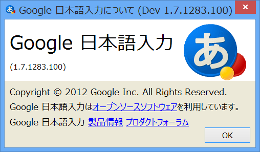
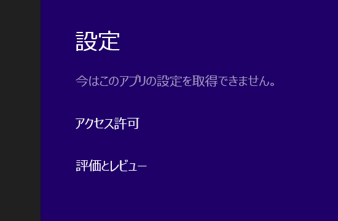
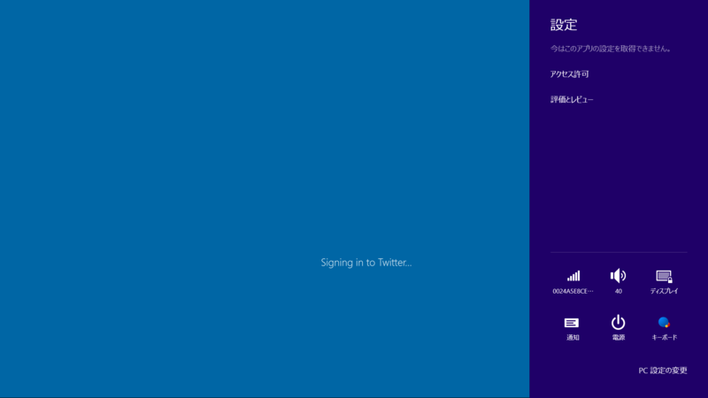
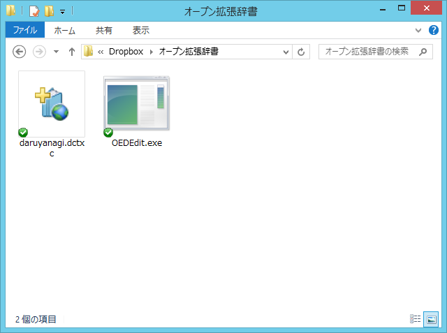
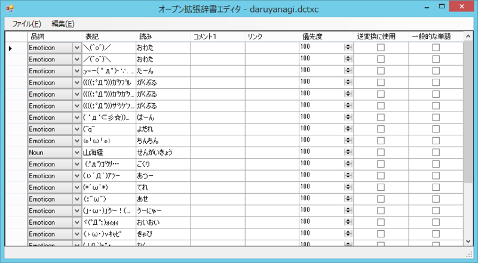

Windows 8 と日本語入力
公開日：

- 窓の杜 - 【NEWS】「Google 日本語入力」v1.7の開発版が公開、機種依存の絵文字が変換できるように
- 窓の杜 - 【NEWS】「Google 日本語入力」開発版がアップデート。Windows 8への対応がさらに強化
「Google 日本語入力 17」の開発版が出て、Windows 8 へ積極的に対応していてうれしい。ただ、いろいろ不具合はあって、たとえば自分の環境だと、

ストアアプリで設定チャームの動作がおかしかったり、

アプリが起動しなくなったりする。普通は起動処理に一定時間かかるとアプリが強制終了されたはずなのだけど、それもなくただ固まっている。
これらの現象は標準の IME に戻せばなおるので、たぶん「Google 日本語入力」が原因なんだろうなと思う。ATOK も出ないし*1、IME の Windows 8 対応はなかなか難しいのかもしれない。
（ストアアプリ対応の IME としては 窓の杜 - 【REVIEW】親指シフト風入力などの独自機能を備えた「SKK」風日本語IME「SKK日本語入力FEP」 なんかもある）
なんやかんやそんなわけで。
当面は標準の IME を使わなきゃなんだけど、こいつはそんなに悪くない。
とくに、「オープン拡張辞書」（Microsoft Office IME 2010 オープン拡張辞書 | Microsoft Office IME 2010 | Microsoft Office 2010）に対応しているのがなかなかよい。XMLベースになっていて、既存の構造化されていないテキストベースのものよりも壊れにくく、また関連付けが効くのでインストール・アップデートが簡単。CAB圧縮するか否かで2種類の拡張子がある（DCTX/DCTXC）。あと、署名をつけてネットワーク共有することも考えられていて、署名なしには収録できる単語数に制限がある。これまでは「Microsoft Office」についてくる、所謂「Office IME」の機能だったんだけれど、Windows 8 では標準で搭載されている。
作り方は、いろいろ参照してほしいのだけど……
- 窓の杜 - 【REVIEW】「Office IME 2010」の“オープン拡張辞書”を作成「オープン拡張辞書エディタ」
- 窓の杜 - 【REVIEW】「Excel」テンプレートで「Office IME 2010」向けの“オープン拡張辞書”を作ろう


自分の場合、Dropbox や SkyDrive なんかのオンラインストレージにツールと辞書を一式置いて、複数の PC から同じものを利用できるようにしている。
とはいえ、「Google 日本語入力」の圧倒的な語彙力はやっぱ魅力なんだよねぇ。一生使わなさそうな単語をわざわざツールで登録するのもめんどくさいしさ。
*1:とはいえ、ジャスッとシステムの製品サイクルでいえば来春に出るのが恒例なのだけど